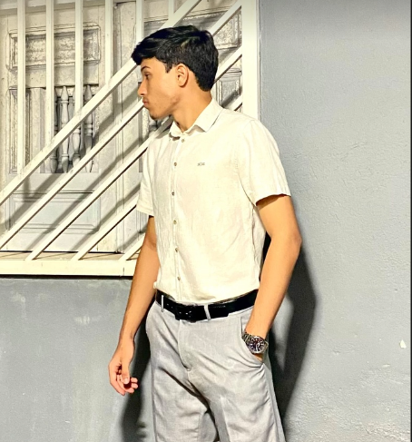

Nasci no dia 11/02/2008 numa cidade chamada Picos, no estado do Piauí, aqui é onde estou desenvolvendo minha história, na parte da escola se inicia no Sesi e é isso foi a primeira e última Escola que me matriculei desde a infância, desde então tenho conseguido muitas conquistas desde a minha alfabetização até outras conquistas fora dela. Estou na terceira série, tenho 17 anos, mas na minha mente ainda estou no quinto ano animado porque vou ter caderno capa dura, canetas, estudara tarde, nunca vou esquecer! Muitas vezes falamos que vai ser muito bom quando acabar, mas quando estamos finalizando começa a vir o choque de realidade, onde aquela convivência, amizades, pessoas do nosso convívio vão se tornar mais raras de serem vistas, não porque elas irão sumir, mas sim a rotina de cada um que irá mudar e que a vida adulta toma o nosso tempo. Sempre que me veem me fazem a mesma pergunta, acho que é assim para todos que estão finalizando ou entrando no terceiro ano. Em que área você quer cursar? Ou às vezes quando estamos muito animados em sala dizem: não parece aluno da terceira série. Ou então uma grande cobrança para o rumo com medo de não termos um emprego ou vida próspera, mas sabemos que nosso futuro a Deus pertence! Devemos fazer a nossa parte e pedir que ele abençoe, pois dessa forma ele irá nos mostrar o que devemos fazer ou decidir. Enfim, espero que esse ano seja um ano muito animado, e com paz e apreço para os outros anos também.
Como estudante da 3ª série do Ensino Médio no SESI Wilma Catão Araújo, meu objetivo vai além de apenas concluir uma etapa escolar: desenvolver habilidades, competências e pensamentos de forma prática e consciente, aproveitando cada oportunidade das quatro áreas do conhecimento para crescer intelectual, pessoal e socialmente.
Escola: SESI Wilma Catão Araújo
Nome: Carlos Heitor da Costa Lo
Filiação: Vanderlê Quirino Lô · Josemary Maria da Costa
Tutores: Cleiton Jericó / Regiane Ibiapino
Série: 3ª Série do Ensino Médio
E-mail: 0000004903@aluno.sesiedupi.com
Número: (89) 99445-4859
Endereço: Bairro Samambaia 1
Ter como objetivo, durante o Ensino Médio, ir além de apenas concluir uma etapa escolar. Desenvolver habilidades, competências, conhecimentos e pensamentos de forma prática e consciente, por meio das atividades realizadas nas quatro áreas do conhecimento ao longo dos eixos formativos. Aproveitar cada aprendizado como uma oportunidade de crescimento intelectual, pessoal e social, buscando construir uma base sólida para o futuro.